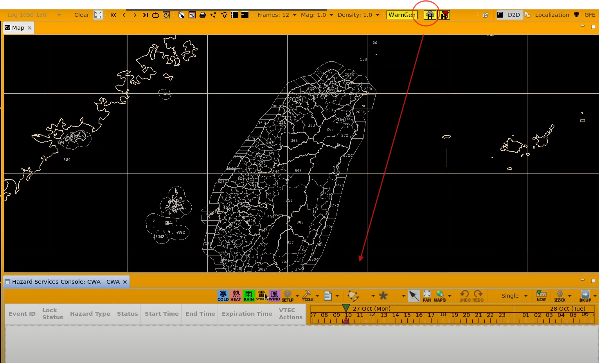
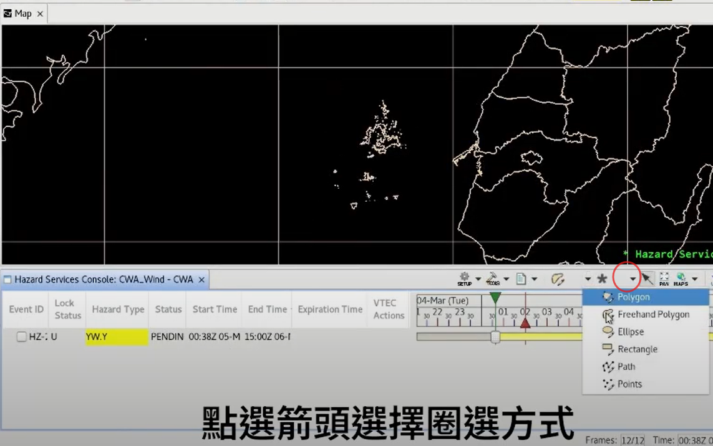
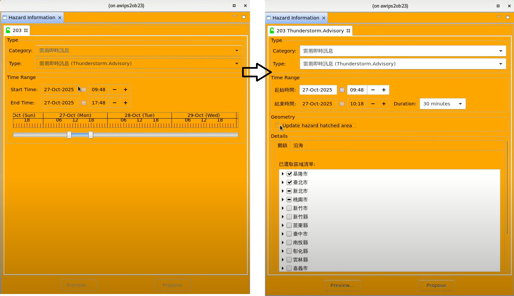
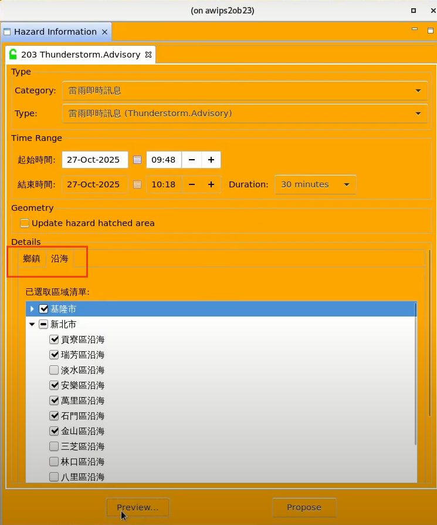
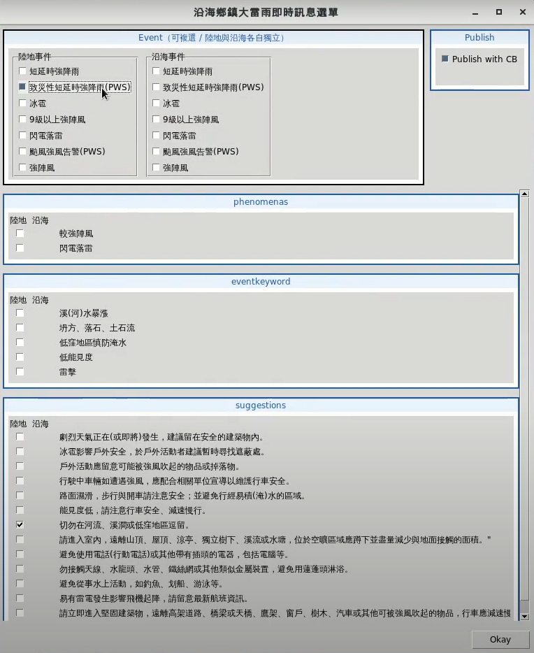
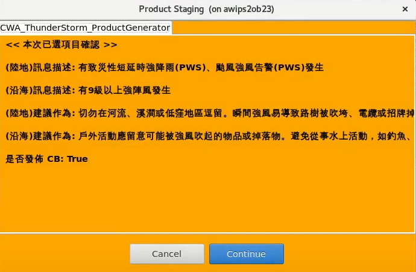
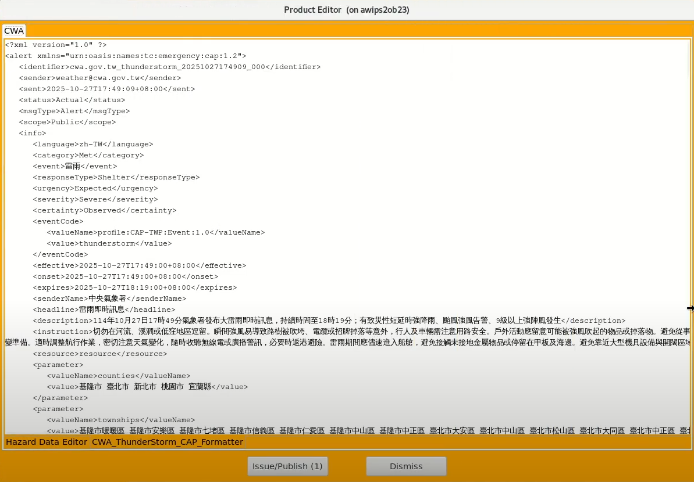
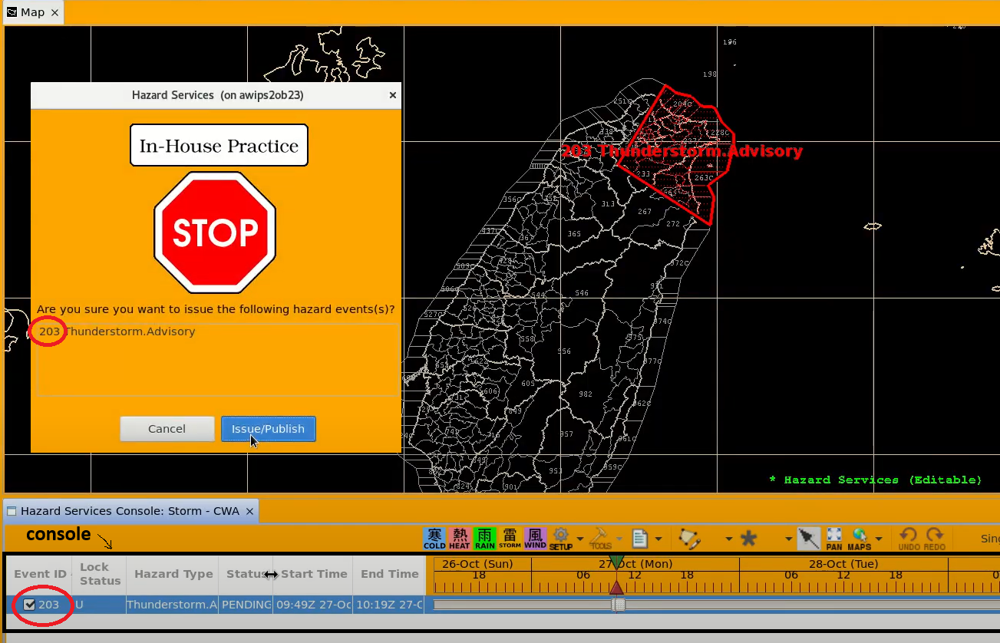
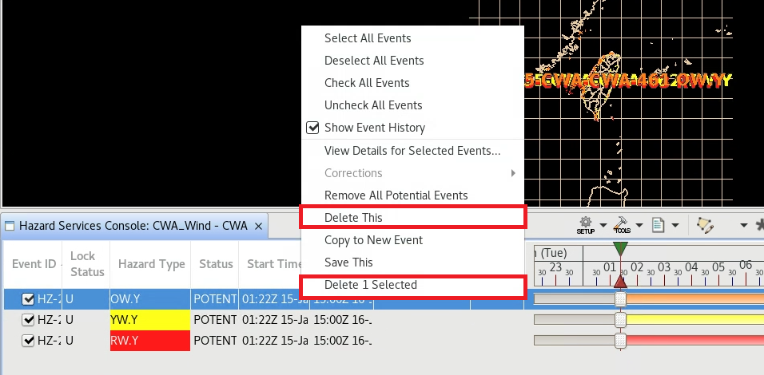

⚡ 大雷雨即時訊息作業 SOP
核心摘要： 此作業流程使用 A2 HS (Hazard Services) 系統進行編輯，最終直接由 HS 系統發布，不經過 TFE2。
1. 開啟 A2 Hazard Services 介面
依照正常程序開啟 AWIPS2 後，請先確認自己所在的 Site 為 CWA（而非 CWAM）。
在 AWIPS2 介面上點選 H 圖示，開啟 Hazard Services，並在下方的 icon 選擇對應特報：
(STORM) 圖示。

2. 繪製發布區域與設定
2.1 疊加參考指引
可疊加雷達回波及 Scan 相關資訊，介面操作方式與 D2D 相同。
2.2 繪製區域
開啟 HS 選單之後，在下方的 * 旁箭頭可選擇繪製方式。
- 建議 使用 Polygon 或 Freehand Polygon 工具。
- 注意 使用 Polygon 時，最後一個點要按 滑鼠右鍵 結束繪製。

2.3 設定事件屬性
圈選區域後會跳出選單，請執行以下步驟：
- 選擇「大雷雨即時訊息」。
- 在跳出的表單中，設定此事件的 延續時間 (Duration)。
- 點擊 Preview 進入下一步。

微調區域技巧： 區域選單分為「鄉鎮」與「沿海」頁籤，可用於微調。但因 Polygon 可能會不一致，建議優先直接在 地圖上 調整 Polygon。

2.4 設定細胞廣播 (CB)
按下 Preview 後會跳出文字訊息選單：
- 須分別選擇 「陸地」 與 「沿海」 的描述文字。
- 自動勾選機制： 若選擇「致災性短延時強降雨 (PWS)」或「颱風強風告警 (PWS)」，系統會 自動勾選
Publish with CB (發布細胞廣播)。
- 若判斷無需發送，可手動取消勾選。

3. 預覽產品
預覽畫面 <一>
顯示即將發送的文字訊息描述，以及是否發布 CB。確認無誤後點擊 Okay。

預覽畫面 <二>
按下 Continue 後，系統會轉出 CAP 檔 的最終內容。請在此步驟再次檢核 發布區域 與 時間。

4. 正式發布
預覽 CAP 檔案確認無誤後，按下視窗最下方的 Issue/Publish 按鈕。
- 系統會跳出最終確認視窗（如下圖左側 <STOP> 畫面）。
- 按下藍色按鈕 Issue/Publish，特報即正式發送到官網。
- 重要 發布後請確認標號是否跟 Console 一致。

5. 其他操作：刪除事件
若需刪除尚未發布的事件（例如畫錯或練習）：
- 點選該事件（確認變為藍底，表示已選取）。
- 按右鍵選擇
Delete This 或 Delete 1 Selected。
註：已發布過的特報會保留在介面上，但無法再次編輯。
